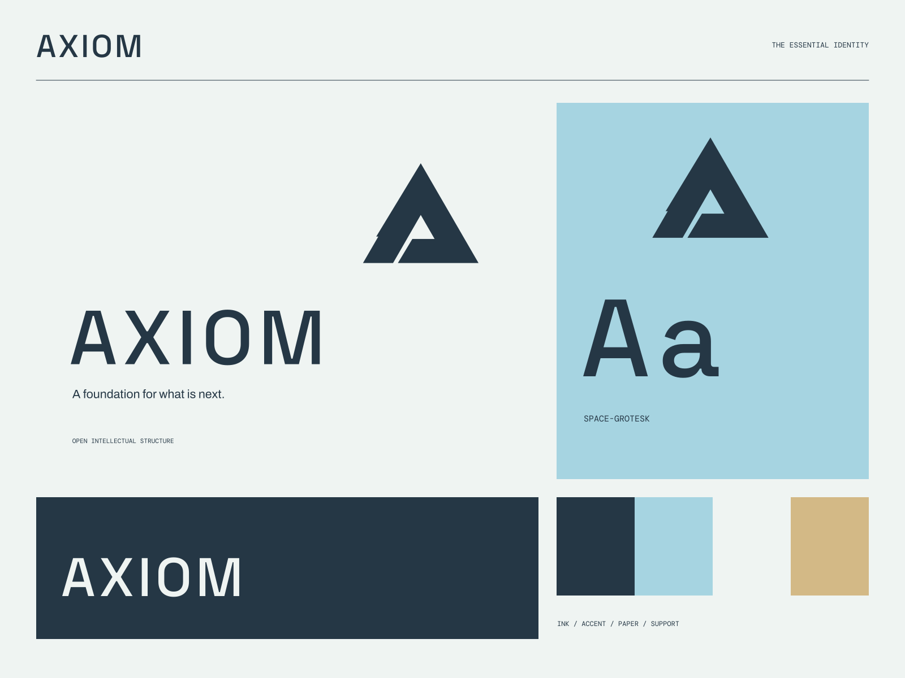

01
Make a question clear
A useful structure for research that others can understand.
OPEN RESEARCH / SHARED DISCOVERY
A foundation for what is next. Better questions. Shared foundations.
A coherent little world
Better questions. Shared foundations. A foundation for what is next.
01
A useful structure for research that others can understand.
02
Thoughtful connections between ideas, evidence, and new possibilities.
03
A practice that makes discovery more open and more useful.

The point of view
Impossible triangular studies, glacial blueprint fields, precise research annotations, and wide-set modern type. Complexity is presented with a deeply legible visual order.